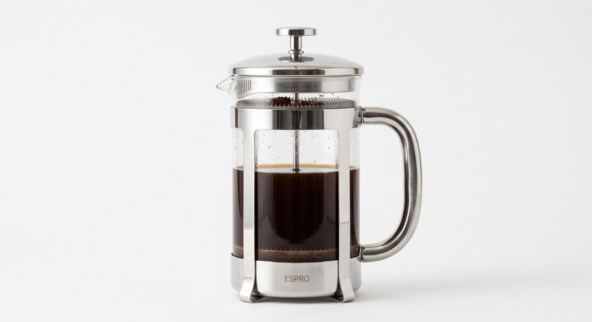
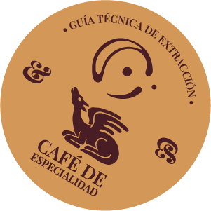
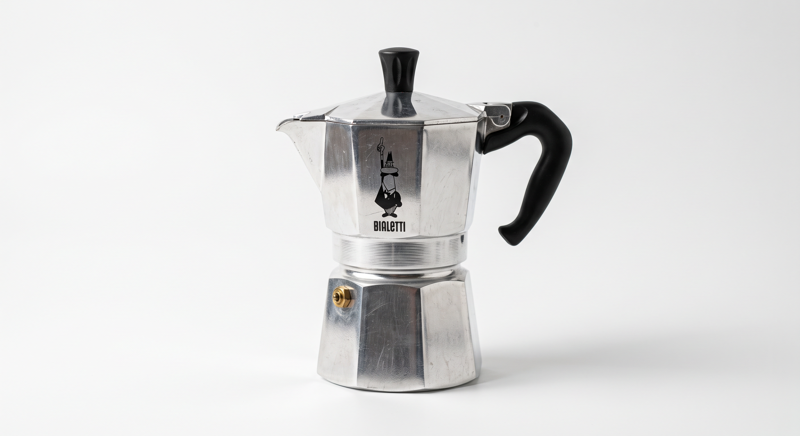
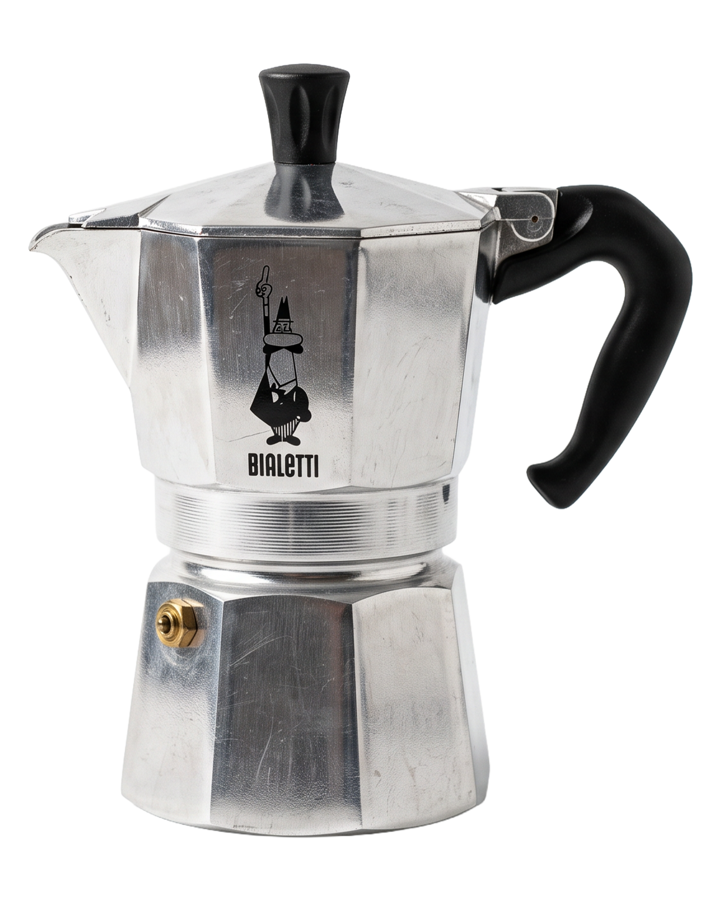
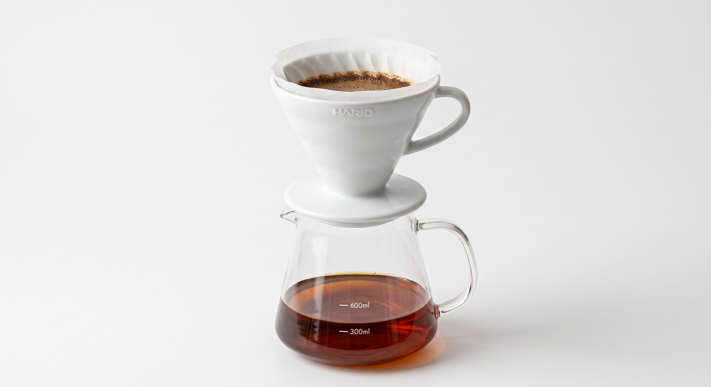

Prensa Francesa
Cuerpo denso y sedoso con profundos matices a cacao amargo y avellanas.


Intensidad máxima, cuerpo denso y una cremosa capa de avellana con notas a caramelo tostado.


Fina
1:2 (18g / 36ml)
2:25 Minutos
91°C

Espresso
Muele 18g de Lote 01 en ajuste fino directamente sobre el portafiltro doble.
Nivela la cama de café uniformemente y aplica presión constante con el tamper (aprox. 10kg).
Purga la ducha del grupo durante 2 segundos para estabilizar la temperatura. Engancha el portafiltro.
Detén la extracción entre los 25 y 28 segundos obteniendo aproximadamente 36ml de espresso denso.

Cuerpo denso y sedoso con profundos matices a cacao amargo y avellanas.

Notas brillantes de frutos rojos silvestres con una acidez limpia y equilibrada.
Grano fresco tostado semanalmente en pequeñas tandas numeradas a mano.